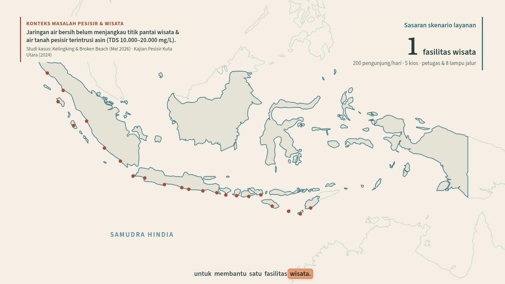
01: Dari pesisir ke satu fasilitas
0 to 20s · cuplikan 11s
Peta lama tetap digambar dari barat ke timur. Klaim 63 GW diganti sasaran satu fasilitas; kamera tetap menyelam ke titik pantai.
Delapan scene berbasis animasi asli, tetap tiga menit. Dua scene baru menjelaskan alokasi layanan dan operasi ketika ombak melemah. Neraca air serta grafik daya melengkapi mekanisme lama. Gerak utama dipertahankan; recap dan jeda dipadatkan untuk memberi waktu pada materi baru.

Peta lama tetap digambar dari barat ke timur. Klaim 63 GW diganti sasaran satu fasilitas; kamera tetap menyelam ke titik pantai.
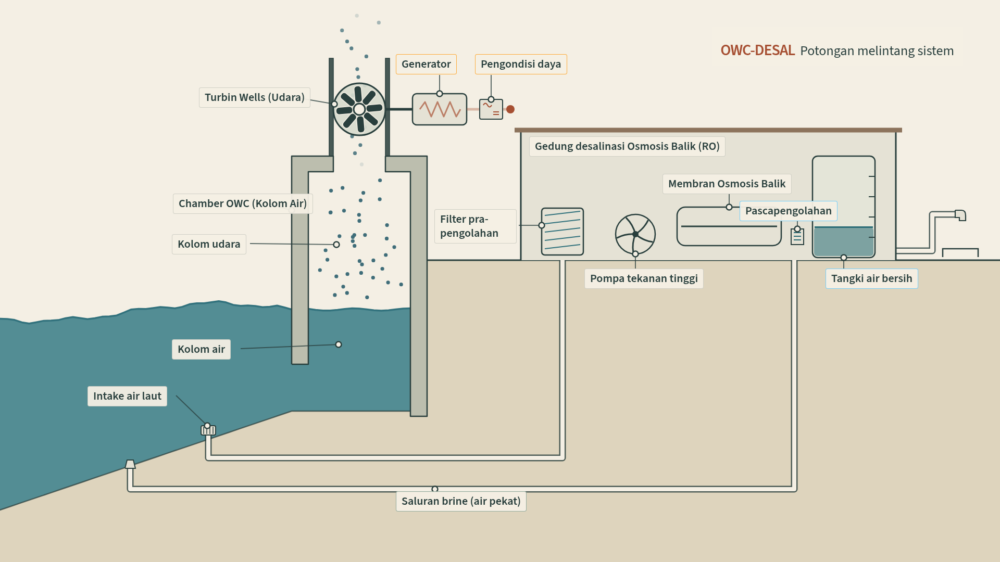
Chamber, turbin, generator, pipa dan unit RO tetap terbentuk mengikuti urutan animasi asli. Material dan anotasinya diperjelas.
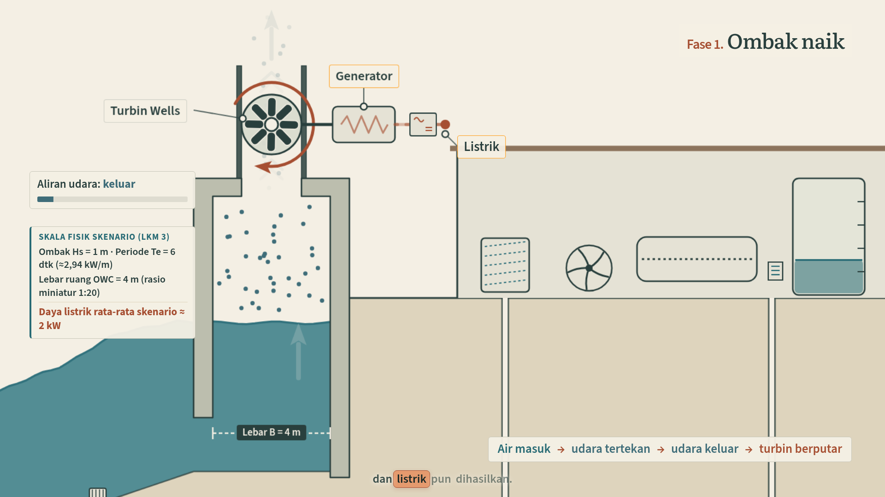
Push-in lama dan proses air naik dipertahankan. Bagian recap dipotong agar ada waktu untuk penerapan.
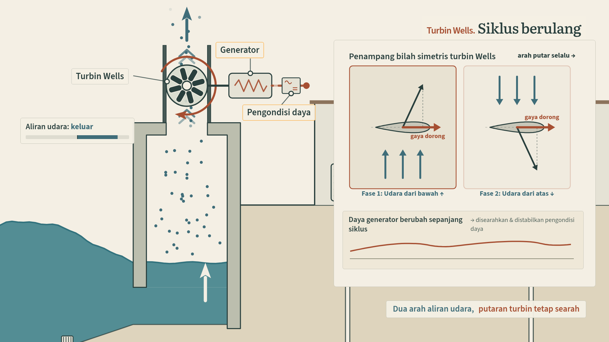
Penjelasan bilah simetris tetap dipakai, dengan grafik daya relatif dan pengondisi listrik.
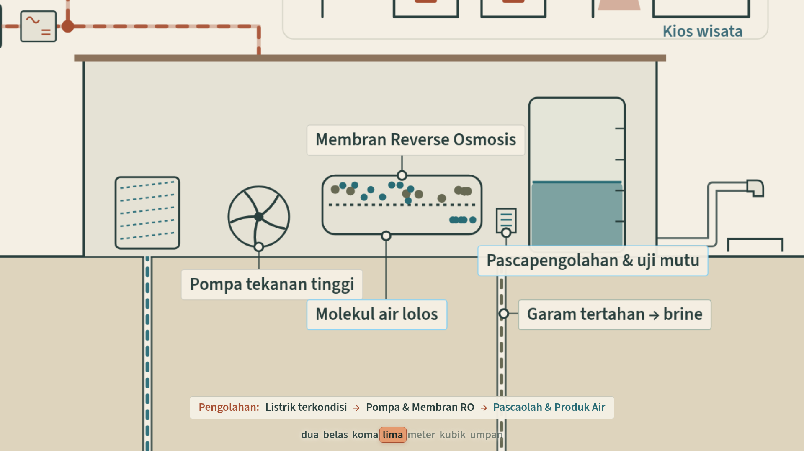
Zoom membran tetap dipakai. Neraca air baru: 12,5 m³ umpan menjadi 5 m³ produk dan 7,5 m³ brine pada recovery asumsi 40%.
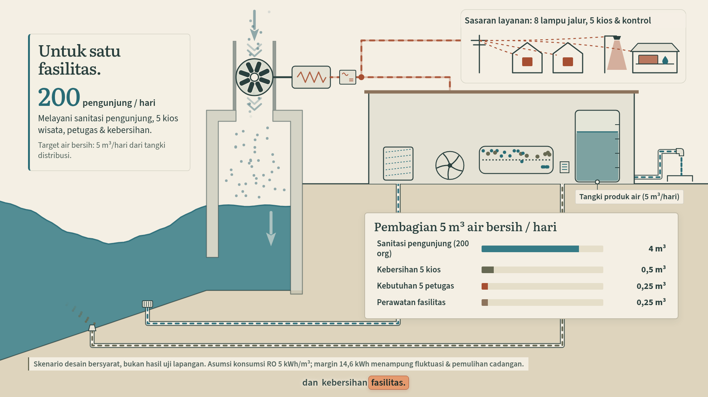
SCENE TAMBAHAN. Dua beat: pembagian air untuk 200 pengunjung dan fasilitas, lalu anggaran energi 43,2 kWh. Mesin dan aliran tetap berjalan di kawasan yang sama.
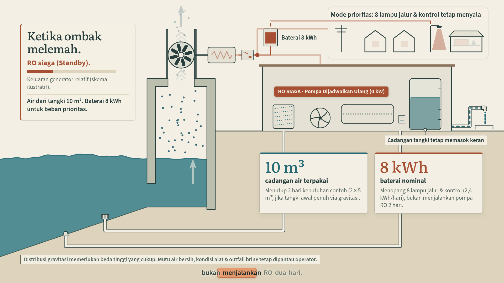
SCENE TAMBAHAN. Ombak melemah, RO masuk siaga, keran tetap dialiri tangki. Baterai hanya menopang beban prioritas; kios dan produksi RO dilepas.
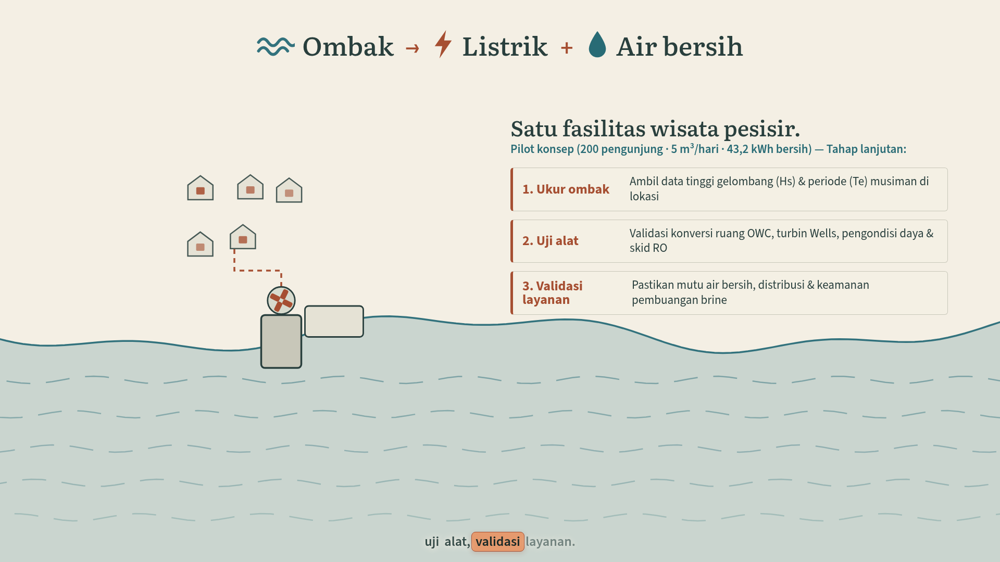
Pull-back ke pantai tetap dipakai, dilanjutkan ajakan pengujian dan identitas lima anggota.
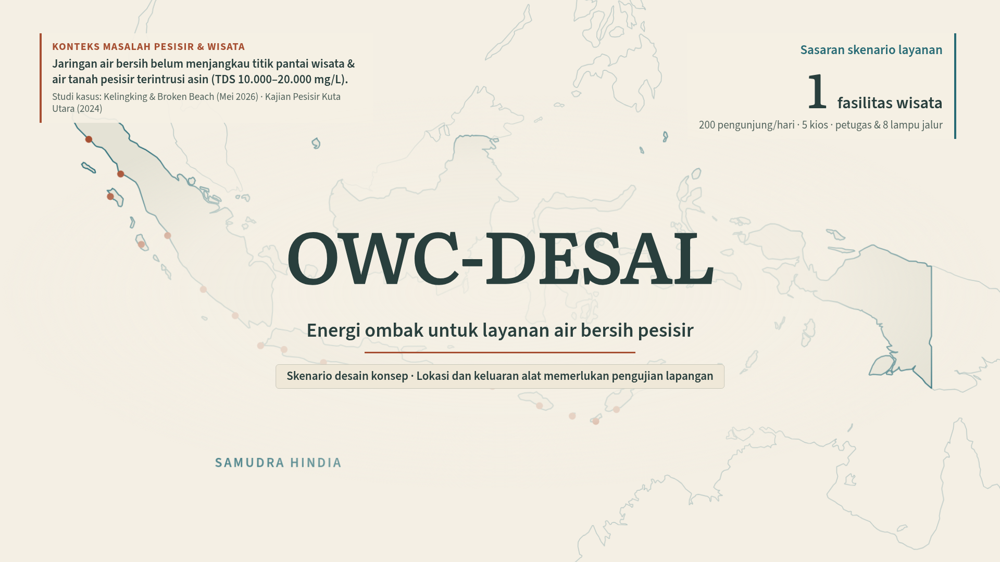
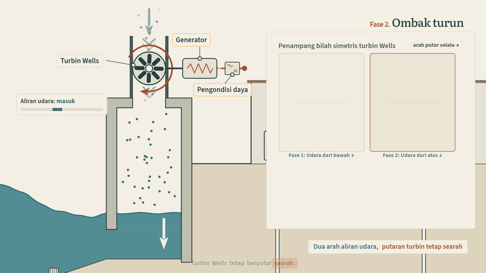
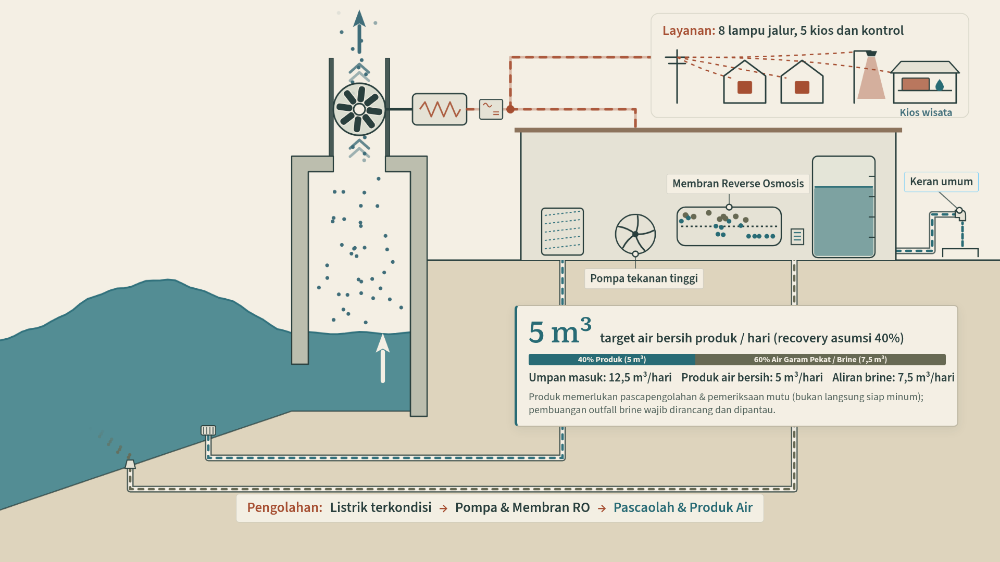
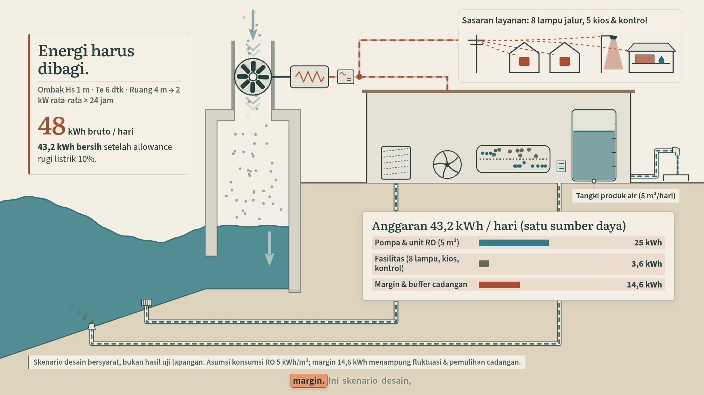
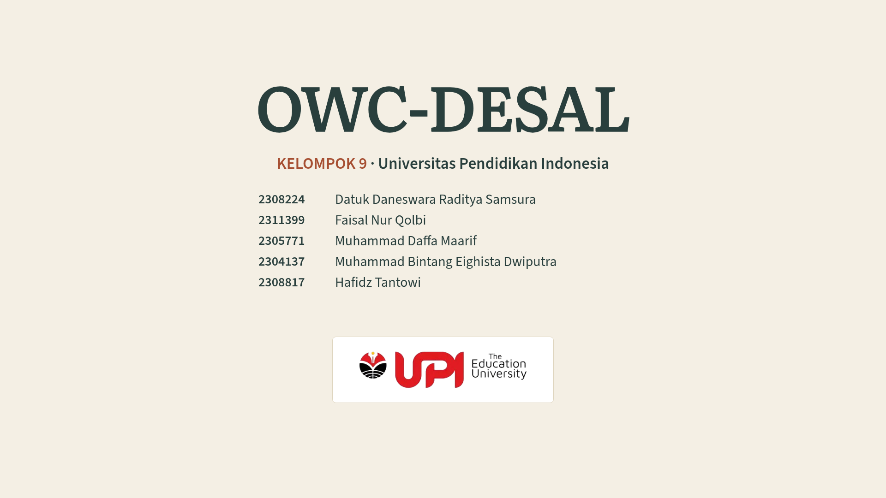